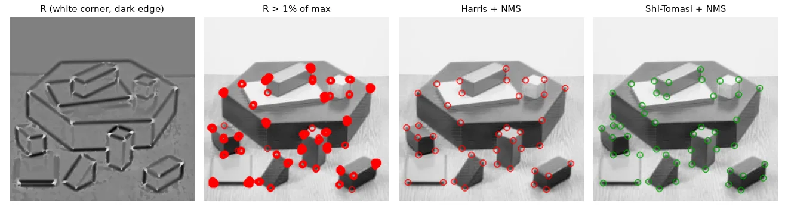
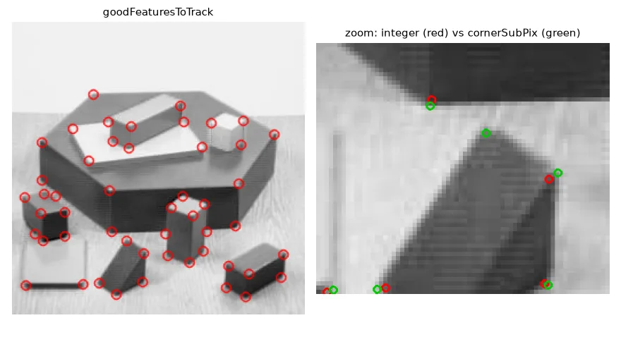
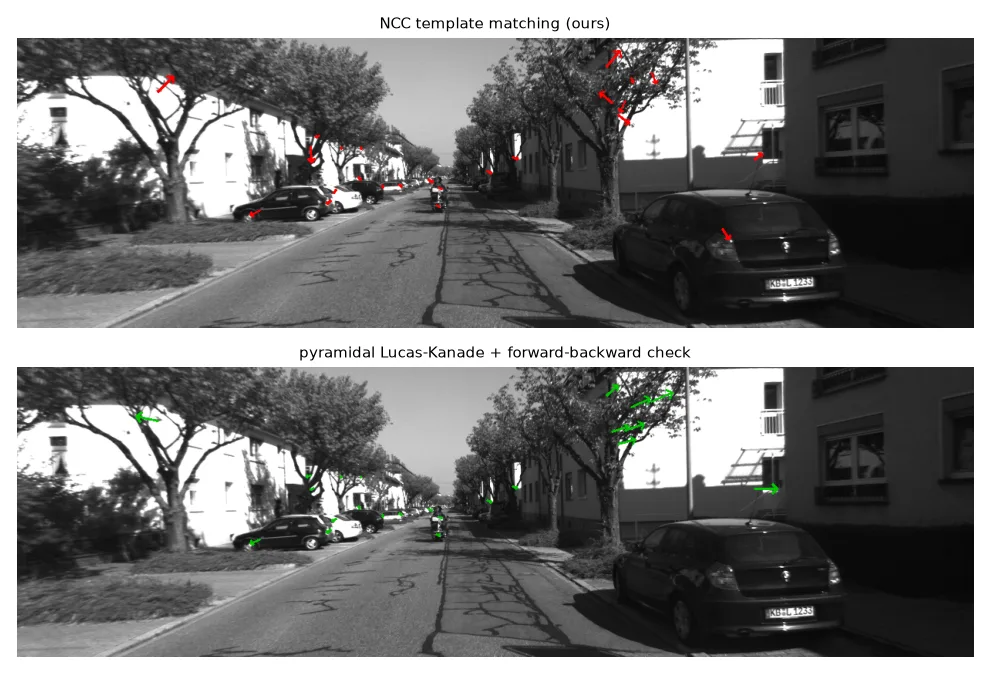

Why corners?#
To track motion, match two photos or calibrate a camera we need points that can be found again. A pixel in a flat region looks like all its neighbours; a pixel on an edge can slide along the edge without changing; only at a corner does any small move change the local appearance.
Make that precise: shift a window by \((u, v)\) and measure the change
A first-order Taylor expansion, \(I(x+u, y+v) \approx I + I_x u + I_y v\), turns it into a quadratic form:
\(M\) is the structure tensor. Its two eigenvalues \(\lambda_1, \lambda_2\) say how much \(E\) grows in the two principal directions: both small → flat; one large → edge; both large → corner.
Harris and Shi-Tomasi#
Computing eigenvalues at every pixel used to be expensive, so Harris and Stephens (1988) used a score built from the determinant and the trace, which are cheap:
\(R\) is large and positive at corners, negative on edges, near zero on flat areas. Shi and Tomasi (1994) used the smallest eigenvalue directly, \(\min(\lambda_1, \lambda_2) = \tfrac{1}{2}\big(\operatorname{tr} M - \sqrt{(\operatorname{tr} M)^2 - 4 \det M}\big)\), which tracks better.
def structure_tensor(img, block=5, sigma=1.0):
"""Sxx, Sxy, Syy: Gaussian-weighted sums of gradient products around each pixel."""
f = cv2.GaussianBlur(img.astype(np.float32), (3, 3), 0) # tame the noise first
ix = cv2.Sobel(f, cv2.CV_32F, 1, 0, ksize=3)
iy = cv2.Sobel(f, cv2.CV_32F, 0, 1, ksize=3)
sxx = cv2.GaussianBlur(ix * ix, (block, block), sigma)
sxy = cv2.GaussianBlur(ix * iy, (block, block), sigma)
syy = cv2.GaussianBlur(iy * iy, (block, block), sigma)
return sxx, sxy, syy
def harris_response(img, k=0.05, block=5):
sxx, sxy, syy = structure_tensor(img, block)
det = sxx * syy - sxy ** 2 # lambda1 * lambda2
trace = sxx + syy # lambda1 + lambda2
return det - k * trace ** 2
def shi_tomasi_response(img, block=5):
sxx, sxy, syy = structure_tensor(img, block)
det = sxx * syy - sxy ** 2
trace = sxx + syy
return (trace - np.sqrt(np.maximum(trace ** 2 - 4 * det, 0))) / 2 # min(lambda1, lambda2)
The window \(w\) is a Gaussian, so the sums become Gaussian blurs of the gradient products.
Non-maximum suppression#
Thresholding \(R\) gives blobs of candidates around each corner. Greedy NMS keeps the strongest candidate, forbids a square around it, and moves on:
def greedy_nms(response, rel_threshold=0.01, min_distance=10, max_corners=None):
"""Best candidate first; every accepted corner forbids a square around it."""
ys, xs = np.nonzero(response > rel_threshold * response.max())
order = np.argsort(response[ys, xs])[::-1] # strongest first
allowed = np.ones(response.shape, bool)
corners = []
for y, x in zip(ys[order], xs[order]):
if allowed[y, x]:
corners.append((x, y))
allowed[max(0, y - min_distance):y + min_distance + 1,
max(0, x - min_distance):x + min_distance + 1] = False
if max_corners and len(corners) == max_corners:
break
return np.array(corners, np.float32)
Harris: 554 pixels above threshold -> 41 corners after NMS

The OpenCV way, and sub-pixel accuracy#
R_cv = cv2.cornerHarris(img.astype(np.float32), blockSize=5, ksize=3, k=0.05) # the map only
pts = cv2.goodFeaturesToTrack(img, maxCorners=50, qualityLevel=0.05, minDistance=8,
blockSize=5, useHarrisDetector=False) # Shi-Tomasi + NMS
criteria = (cv2.TERM_CRITERIA_EPS + cv2.TERM_CRITERIA_MAX_ITER, 50, 0.001)
refined = cv2.cornerSubPix(img, pts.copy(), winSize=(5, 5), zeroZone=(-1, -1), criteria=criteria)
goodFeaturesToTrack is Shi-Tomasi (or Harris) + NMS + "keep the N best". Corners found on the pixel grid are only accurate to ±0.5 px, and the blur moves them further; cornerSubPix refines each one by finding the point where the image gradients around it are orthogonal to the vector towards it. Here corners moved by 1.9 px on average — huge for calibration (lesson 14), where we need ~0.1 px.

Tracking by template matching#
To follow a corner into the next frame, take a small patch around it and look for the most similar patch nearby. The similarity that does not care about brightness or contrast changes is the zero-mean normalised cross-correlation:
def ncc(a, b):
"""Zero-mean normalized cross-correlation of two equal-size patches, in [-1, 1]."""
a = a.astype(np.float32) - a.mean()
b = b.astype(np.float32) - b.mean()
denom = np.sqrt((a * a).sum() * (b * b).sum())
return float((a * b).sum() / denom) if denom > 0 else 0.0
def track_ncc(img0, img1, points, half=7, search=20):
"""For each point, find the patch of img1 (within +-search px) most similar to its patch in img0."""
out = []
for x, y in points.astype(int):
tpl = img0[y - half:y + half + 1, x - half:x + half + 1]
best, best_xy = -1.0, (x, y)
for dy in range(-search, search + 1):
for dx in range(-search, search + 1):
yy, xx = y + dy, x + dx
win = img1[yy - half:yy + half + 1, xx - half:xx + half + 1]
if win.shape != tpl.shape:
continue
score = ncc(tpl, win)
if score > best:
best, best_xy = score, (xx, yy)
out.append((*best_xy, best))
return np.array(out, np.float32)
cv2.matchTemplate computes the NCC at every position of the search window at once:
x, y = p0[0].astype(int)
tpl = frame0[y - 7:y + 8, x - 7:x + 8]
area = frame1[y - 27:y + 28, x - 27:x + 28] # +-20 px search window
scores = cv2.matchTemplate(area, tpl, cv2.TM_CCOEFF_NORMED) # same NCC, vectorised
_, best_score, _, best_loc = cv2.minMaxLoc(scores)
Both find the same position with the same score (0.849).
Lucas-Kanade optical flow#
Template search costs \(O(\text{window}^2)\) per point. Lucas-Kanade instead assumes brightness constancy, \(I_x u + I_y v + I_t = 0\), writes one such equation per pixel of a small window and solves the least-squares system \(M\,[u, v]^\top = -[\sum I_x I_t, \sum I_y I_t]^\top\) — the same structure tensor \(M\). That is why it needs corners: on an edge \(M\) is singular (the aperture problem). An image pyramid handles large motions by solving coarse-to-fine.
p0_lk = p0.reshape(-1, 1, 2)
p1_lk, status, err = cv2.calcOpticalFlowPyrLK(frame0, frame1, p0_lk, None,
winSize=(21, 21), maxLevel=3)
# forward-backward check: track back to frame 0 and demand that we land where we started
p0_back, status_back, _ = cv2.calcOpticalFlowPyrLK(frame1, frame0, p1_lk, None,
winSize=(21, 21), maxLevel=3)
fb_error = np.linalg.norm(p0_back - p0_lk, axis=2).ravel()
good = (status.ravel() == 1) & (status_back.ravel() == 1) & (fb_error < 1.0)
The forward-backward check tracks every point back to the first frame and rejects those that do not return home (here 2 of 25). It is the cheapest outlier filter there is.

Exercises#
- Plot \(\lambda_1\) vs \(\lambda_2\) (computed with
np.linalg.eigvalshon \(M\)) for every pixel ofblox.jpgand colour the points by Harris' \(R\). - Track 200 corners through all 15 KITTI frames with LK, re-detecting new corners when fewer than 100 remain, and draw the tracks.
- Make
track_nccvectorised withcv2.matchTemplateand compare speed.